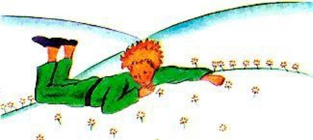

16장
그리하여 일곱 번째로 들른 별이 지구였어. 지구는 기존의 별들과는 확연히 달랐지! 111명의 왕들이 있는 곳이었거든, 물론 흑인 왕들도 포함해서 말이야. 또한 7천 명의 지리학자와, 90만 명의 장사꾼들과, 750만 명의 술꾼들, 그리고 3억 1,100만 명의 허영심쟁이들을 포함해 인구만 20억에 달하는 큰 별이었어. 지구 크기를 개념적으로도 잡기 위해서, 전기가 발명되기 이전, 여섯 개 대륙에서 밤마다 가로등의 불을 키는 사람만해도 46만 2,511명에 달했다는 얘길(얘기를) 해주려고 해. 조그만 떨어져서 본다면 그야 말로 장관이지. 가로등 불 키는 사람들의 움직임은 흡사 오페라의 발레단 같거든. 먼저 뉴질랜드와 오스트레일리아에서 불 키는 사람들이 가로등 불을 밝히고 나면 이후 그들은 자러 갔고, 이후 다시 중국과 시베리아의 램프 밝히는 춤꾼들이 무대에 춤을 추며 오르지. 그런 다음 그들도 뒷무대로 사라지고 나면 이윽고 러시아와 인도의 가로등 등불을 밝히는 사람들의 차례가 돼.
그런 다음엔 아프리카와 유럽 차례고, 그 다음은 남아메리카로 이어져, 그런 다음엔 북아메리카로까지 옮겨가지. 이 순서는 틀리는 법이 없었어. 그야말로 장엄한 광경이라 한 이유가 이거야. 다만 북극 가로등 등불은 딱 하나였는데 불을 밝히는 사람도 한 명 뿐이었지. 그는 남극에 딱 하나 뿐 가로등 램프를 밝히는 이의 동료였어. 이 둘은 남들에 아랑곳하지 않고 느긋하게 생활했는데, 1년에 가로등 등불을 딱 두 번만 키면 되기 때문이었지.
17장
뭔 말을 거창하게 하려다 보면, 허풍이 자연스레 들어가게 돼. 나도 방금 거리의 불 키는 사람들 얘길하면서 그랬으니까. 그치만 이는 우리가 사는 별이 어떤지 잘못된 인상을 심어줄 우려가 있어서였어. 지구엔 사실 사람이 사는 공간은 아주 좁아. 만일 육지에 거주하는 20억 명의 사람을 약간 타이트하게 세운다면 가로(수직방향 길이) 30킬로미터, 세로(수평방향 길이) 30킬로미터 넓이면 족하긴 해도, 어쨌든 마음만 먹는다면 태평양 작은 무인도에다 사람들을 다 모아 놓을 수도 있는 노릇이니까. 물론 어른들은 이 말을 믿지 않을 거야. 그들은(어른들은) 자신들이 이 지구상의 공간을 다 차지하고 있다 여길 테니까. 스스로를 큰 바오밥나무로 인식하거든. 그러니 어른들께 뭔가를 납득시리켜거든 숫자를 언급하길 바래. 그들은 숫자를 사랑하니 숫자로 어른들을 기쁘게 해드릴 수 있지. 그치만 그런 지루한 계산으로 시간을 낭비하지 말자. 쓸모도 없는 일이니. 그냥 이번 일은 날 믿길 바래.

땅에 내린 어린 왕자는 주변에 아무도 보이지 않는 것에 적잖이 놀라고 말았데. 잘못 온 건 아닌가 벌써부터 걱정이 되었다나 봐. 그때 모래바닥에 뭔가 달빛을 받아 원 같은 게 하나 꿈틀거리더래. "안녕(굿 나잇),"라며 어린 왕자가 말했어, 위험을 무릅쓰고 말이야. "그래 안녕."라며 뱀이 말했어. "내가 온 이 별은 이름이 뭐니?"라며 어린 왕자가 물었어. "지구별, 여긴 아프리카라고 해."라며 뱀이 대답했다. "아!... 그러니까 지구엔 아무도 안 사는 거구나?" "여기가 사막이라서 그래. 사막엔 아무도 안 살지. 지구는 무척 크거든."라며 뱀이 말하는 동안 어린 왕자는 돌 위에 앉으며 하늘 높이 올려다보았어. "예뻐,"라며 어린 왕자가 말했지. "누구든 밤하늘을 올려다보면 반짝이는 별들 사이에 자신의 별을 찾을 수 있을 거야. 내 별 좀 보렴. 우리 바로 위에 있잖니... 그치만 엄청 멀리 떨어진 거리에 있지!" "예쁜 별이군,"라며 뱀이 말했어. "그래 여긴 어쩐 일이니?" "꽃과 문제가 좀 있었거든."라며 어린 왕자가 말했어.
"아!"라며 뱀이 말했다. 그렇게 또 침묵이 이어졌어.

"사람들은 어디 사니?"라며 어린 왕자가 말을 다시 꺼냈어. "사막엔 우리만 있어 외로운데..." "사람들 사이에서도 외로운 건 마찬가지야."라며 뱀이 말했어. 어린 왕자는 뱀을 한참 바라보았어. "넌 재밌게 생긴 동물이구나."라며 마침내 어린 왕자가 말했지. "손가락 마냥 가늘잖니." "하지만 난 왕의 손가락보단 더 힘이 쎄단다."라며 뱀이 말했지.
그 말에 어린 왕자는 미소지었지. "넌 힘이 센 건 아니지... 넌 발도 없잖니... 심지어 여행을 다닐 수도 없고..." "그래도 난 널 배보다 더 멀리 데려갈 수 있어(입으로 물어서 죽일 수 있다는 얘기임)."라며 뱀이 말했어. 뱀이 마치 금팔찌마냥 어린 왕자의 발목을 자신의 몸으로 감쌌어. "내게 닿는 건 누구든 그가 왔던 곳으로 돌아가게 할 수 있단다,"라며 뱀이 다시 말했지. "하지만 넌 순수해, 별에서 왔으니..." 어린 왕자는 아무 말도 하지 않았어. "그런데 넌 참 불쌍해 보이는 구나, 이렇게 약한 얘가, 이 억센 지구에 오다니. 만일 언젠가 네 별이 무척 그리워지면 말해 내가 널 도와줄 수 있을 테야. 나라면 할 수 있거든..." "오! 뭔 말인지는 알겠는데,"라며 어린 왕자가 말했어. "어 근데 넌 항상 수수께끼처럼 정말 말을 하는구나?" "그걸 다 내가 풀 수 있다는 말이었어."라며 뱀이 말했어. 그들은 그렇게 다시 입을 다물고 말았데.
18장
어린 왕자는 사막을 거닐어보았지만 마주친 거라곤 꽃 한 송이 뿐이었어. 꽃잎이 세 개인 꽃이었지. 조용하고 다소곳한 꽃 말이야... "안녕(굿 모닝)."라며 어린 왕자가 말했어. "안녕(굿 모닝)."라며 그 꽃이 말했지. "사람들은 어딨니?"라며 어린 왕자가 예의 바르게 물었어. 그 꽃은, 언젠가, ‘대상’(사막의 ‘큰 상인’과 낙타들의 행렬을 말함)이 지나가는 걸 본 적이 있다고 말했주었어.

"사람들? 그땐 그들이 여섯 내지는 일곱 명쯤 되어 보였어요. 수년 전 얘기죠. 하지만 사람들을 찾긴 여간 어려울 거예요. 바람과 함께 떠돌아다니는 이들이거든요. 사람들에겐 뿌리가 없기에 매번 쪼들리며 방랑하는 거예요." "잘 있어(굿 바이)."라며 어린 왕자가 말했어. "네 안녕히 가세요."라며 그 꽃이 말했지
19장
어린 왕자는 높은 산에 올랐데. 어린 왕자의 별에선 산이라곤 무릎높이까지 오는 세 개의 화산이 다였는데. 가끔 그는 사화산(꺼진 화산)을 걸상으로 사용하곤 했다는군. "이런 높은 산이라면,"라며 어린 왕자가 혼잣말로 말했지. "온 별과 온 사람들을 다 내려다볼 수 있겠는데." 그치만 어린 왕자가 산에서 바라본 거라곤 뾰족히 솟은 바위투성이 산봉우리들 그래 그뿐이었지. "안녕하세요(굿 모닝)."라며 어린 왕자는 무작정 말을 걸며 말했어. "안녕하세요... 안녕하세요... 안녕하세요..."라는 메아리가 들려왔지. "누구 계세요?"라며 어린 왕자가 말했데. "누구 계세요? 누구 계세요? 누구 계세요?"라는 또 메아리가 들려오더래. “제 친구가 되어주세요, 너무 외로워요."라며 어린 왕자가 말했어. "외로워요... 외로워요... 외로워요..."라는 메아리가 들릴 뿐이었지.

"정말 이상한 별이야!"라며 어린 왕자는 생각했어. "이곳은 너무 건조하고 뾰족하고 재미가 없어. 사람들은 상상력도 없나봐. 내 말만 되풀이하잖아... 내 별에 있는 꽃은 그래도 항상 내게 먼저 말을 걸어주었는데..."
20장
하지만 어린 왕자는 모랫길과 바위와 눈뿐인 곳을 한 참 걸어서야 간신히 정말이지 운 좋게도 길로 접어들 수 있었어. 모든 길은 거주지로 이어지게 마련이니까 안심이 된 거지. "안녕(굿 모닝)."라며 어린 왕자가 말했어. 그건 그곳 정원에 가득한 장미들에게 한 말이었어. "안녕(굿 모닝)."라며 장미들이 말했데. 어린 왕자는 장미를 바라보았어. 정말 자신의 장미 꽃을 닮은 장미들로 가득했거든.

"너희들은 누구니?"라며 대경실색하며 어린 왕자가 물었지. "우린 장미들이야."라며 장미들이 말했어. "아!"라며 어린 왕자가 말했지. 아주 불행한 마음이 들었거든. 자신의 꽃은 온 우주에서 자신이 유일한 장미라고 아는데. 지금 보니 이 정원에만 해도 5천 송이 넘는 장미들이 똑같은 아름다움(모습)으로 자리해 있었기 때문이지! "그 애(어린 왕자의 별에 있는 장미)가 당황하겠어."라며 어린 왕자가 혼잣말을 했어. "너무 당황해 헛기침을 하거나 창피함을 벗어나기 위해 기절한 척 할지도 몰라. 아님 자존심이 넘 상해선 내가 오히려 자책감을 느끼게 정말로 죽으려 들지도 몰라..." 그때 어린 왕자가 다시 혼잣말을 했어. "단 하나 뿐인 꽃을 가지고 있어 부자라고 생각했는데, 지금 보니 그저 그런 장미 한 송이를 소유하고 있었던 거네. 내 무릎에 닿는 세 개 화산, 더구나 그 중 하나는 아마도 영원히 꺼진 화산인 거고, 이젠 난 위대한 왕자도 뭐도 아니야..." 그러더니 잔디에 엎드려 울기 시작했데.
21장

그때 여우가 나타났어. "안녕(굿 모닝)."라며 여우가 말하더래. "안녕(굿 모닝)."라며 어린 왕자도 말했지, 하지만 살며시 든 고개 너머로는 아무 것도 보이지 않았지. "난 여깄어,"라며 그 목소리가 말하더래. "사과 나무 아래 말이야."
"넌 누구니?"라며 어린 왕자가 물었지. "근데 넌 참 귀엽게 생겼구나..." "난 여우라고 해."라며 여우가 말했어. "그럼 나랑 놀아줘,"라며 어린 왕자가 제안했지. "지금 난 슬프거든..." "난 너랑 놀아줄 수 없어,"라며 그 여우가 말했어. "난 아직 길들여지지 않았기 때문이야." "아! 그럼 미안."라며 어린 왕자가 말했지. 그치만 잠시 생각해보든 어린 왕자가 덧붙였지. "근데 '길들인다'는 게 뭐니?" "넌 여기 사람이 아니구나,"라며 여우가 말했어. "뭘 하던 참이었니?" "난 사람들을 찾고 있어,"라며 어린 왕자가 말했어. "근데 '길들인다'가 뭐야?" "사람들이라고,"라며 여우가 말했어. "사람들은 언제나 총을 가지고 사냥을 하러 다니지. 그 바람에 난 꽤 난처하단 말이야! 사람들은 또 닭을 사육하기도 해. 그 닭이 내 유일한 낙이란다. 너도 닭을 찾고 있었던 거구나?”
"아니,"라며 어린 왕자가 말했어. "난 친구를 찾고 있었어. 근데 '길들인다'가 무슨 말인 거야?" "잊혀지지 않도록,"라며 여우가 말하더래. "관계를 맺는다란 뜻이야..." "관계를 맺는다고?" "응,"라며 여우가 말했어. "넌 그저 내게 어린 소년일뿐이야, 다른 수십만 명의 어린 소년들과 같은 그냥 그저 그런 소년 말이야. 그러니 나도 네가 굳이 필요한 건 아니야. 너도 마찬가지로 내가 굳이 필요한 것도 아니고. 난 너에게 그저 수십만 마리의 여우들 중에 하나일 뿐이거든. 하지만 네가 날 길들이면, 우린 서로 필요하게 되는 거야. 그리고 넌 내게 이 세상 유일한 것이 되지. 나도 네게 이 세상 유일한 것이 되고..." "이해되기 시작했어,"라며 어린 왕자가 말했어. "꽃이 있는데... 내 생각에 그 애가 날 길들인 거 같아..."
"충분히 가능한 일이야,"라며 여우가 말했어. "지구 상에선 온갖 게 다 벌어지니까..." "오! 그 앤 지구 애가 아니야."라며 어린 왕자가 말했어. 여우가 이 발언에 무척 흥미로워했어. "다른 별에서 왔구나?" "응." "네 별에도 사냥꾼이 있니?" "아니." "재밌는데! 그럼 암탉들은?" "없어." "완벽한 곳은 아니구나."라며 여우가 못내 아쉬워했어. 그치만 여우는 곧 자기 얘기로 돌아갔지. "내 삶은 단조롭단다. 난 닭들을 쫓아다니고, 사람들은 날 쫓아다니지. 모든 닭들은 서로 닮았어, 모든 사람들이 서로 비슷하게 닮은 것처럼. 그래서 난 좀 싫증이 나던 참이야. 그치만 네가 날 길들인다면, 내 삶엔 광명(햇빛)이 비추게 될 거야. 난 모든 다른 발자국 소리들 속에서도 네 발자국을 구분하게 될 거고. 다른 이들의 발자국 소리는 날 땅속 굴로 들어가게 만들겠지만, 네 발자국 소리만은 날 굴 밖으로 불러낼 거야, 마치 음악처럼. 자 봐! 보이지, 저기, 밀밭 말이야? 난 빵을 먹지 않는단다. 그러니 저 밀맡들이 내겐 아무 의미가 없어. 그러니 밀밭은 내게 어떤 생각도 불러일으키지 않아. 슬프지! 하지만 넌 황금 머릿결을 가졌잖아. 그러니 네가 날 길들인다면 모든 게 경이로워질 거야! 저 밀밭들이 금빛으로 익어갈 때면 난 널 떠올리게 될 거야. 밀들을 쓸어내리는 바람소리에도 난 설레이게 될 거야..." 여우는 입을 다문 채 오래도록 어린 왕자를 바라다보며 서 있었어. "그러니... 날 길들여죠!"라며 그(여우)가 말했이.
"그럴게,"라며 어린 왕자가 대답했지. "하지만 난 시간이 많지 않아. 난 친구도 많이 만나야 하고 배워야 될 것도 많으니까." "자신을 길들이는 것만 알면 돼,"라며 여우가 말했어. 사람들은 더이상 어떤 걸 배울 시간이 없단다. 상점에서 물건 살 때도 기존에 진열되어 있는 것들만 사지. 하지만 친구가 하는 상점이 없기에 더는 친구도 없는 거지. 만약 네가 친구를 원 한다면 날 길들여봐!" "어떻게 하면 되는데?"라며 어린 왕자가 말했다. "인내심을 발휘해야 해,"라며 여우가 말했다. "우선은 내게서 좀 떨어진 곳에 앉아줘, 저기 좋네, 잔디밭 말이야. 내가 널 힐끔 쳐다보면 너도 날 힐끔 봐줘, 아무 말 없이 말이야. 언어는 오해를 낳지만 매일같이 네가 조금씩 내게로 다가와서 앉아준다면...”

매번 같은 시간에 와주면 좋아,"라며 여우가 말했어. "그래 준다면, 예를 들어 오후 4시 쯤, 그럼 난 3시부터 행복해지기 시작할 거야. 그러다 4시가 가까워지면 질수록 난 더 행복할 거고. 어서 4시가 왔음 하고 ‘갈망하며’(바라며) 설레이게 되겠지. 매초 행복의 저울을 달아보게 될 거야! 하지만 네가 아무 때고 찾아온다면, 난 언제 심장을 졸여야 될지 모르게 되지... 그래서 ‘의식’(절차 또는 예배식 같은 의식)이 필요한 거야."
"의식이 뭔데?"라며 어린 왕자가 말했어. "잊히는 게 많으니까,"라며 여우가 말했지. "어느 날 하루를 다른 날 하루와 다르게 만드는 거야, 그건 시간이 될 수도 있어. 예를 들어 사냥꾼들 사이에서도 의식이 있단다. 그들은 목요일이면 마을 처녀들과 함께 춤을 추러가. 그러니 내게 목요일은 얼마나 행복한 날이니! 내가 포도밭을 거닐어도 아무도 날 관섭안하지. 사냥꾼들은 그 날 종일 춤을 추고 있을 테니까. 하지만 그렇다고 매일 그런 날이 또 계속되면 그것 자체로 또 문제야. 하나도 쉬는 날 같지 않을 테니까." 그렇게 어린 왕자는 그 여우를 길들이게 되었어. 그러다 떠날 때가 또 가까워진 거지. "아!"라며 여우가 말했어. "눈물이 나오려고 해." "네 실수야,"라며 어린 왕자가 말했지. "네가 나보고 널 길들여 달라고만 안 했어도 이런 일은 벌어지지 않았을 거야." "물론."라며 여우가 말했어. "하지만 그래도 울었을 거야!"라며 어린 왕자가 말했어. "물론."라며 여우가 말했지. "결국 아무 것도 달라진 건 없어!" "아니,"라며 여우가 말했어. "옥수수 밭의 색깔이 달라졌잖니, 결국 그걸 얻은 거야 우린." 그런 다음 여우가 덧붙였데. "가서 장미들을 다시 보고 오렴. 그럼 이 세상에 하나뿐인 네 장미를 이해하게 될 거야. 그러고 다시 돌아와 내게 작별인사 해주면, 내가 네게 비밀선물 하나를 건네 줄게." 어린 왕자는 다시 장미들을 보러 갔어.
"너희들은 내 장미와 전혀 닮지 않았어, 너희들은 그냥 없었던 거나 마찬가지야,"라며 어린 왕자는 말했어. "아무도 너흴 길들이지 않았고, 너희도 아무도 길들이지 않았잖니. 너흰 여우를 닮았어. 수 십 만 마리의 어느 여우들과 같아. 하지만 그 중 한 마리와 난 친구가 되었어. 이제 그 여우는 내게 특별한 친구가 되었어." 장미들로선 여간 당황스러운 게 아니었지. "너희들도 아름다워, 하지만 공허할 뿐이야."라며 어린 왕자는 다시 말했어. "너희들은 나 때문에 죽을 리 없어. 물론, 내 장미도 지나가는 행인에겐 어느 장미일 뿐일 테지. 그치만 내게는 그 장미가 너희 모두보다 더 소중해. 내가 그 장미에 물을 준 이후로, 그리고 유리 덮개를 씌어준 이후로, 바람 막이를 설치해 준 이후로, 애벌레들을 잡아준 이후로, 물론 그 중 두 세 마리 애벌레는 나중에 나비가 되라고 살려 두었지만. 그 이후로 그 앤(어린 왕자의 별에 사는 장미 한 송이) 내 얘기를 들어 주었고, 날 칭찬해주며 내게 자랑질을 해주었고, 심지어 입도 꾹 다물곤 해주었지 이따금씩은 말이야. 그때부터 그 앤 내 유일한 장미가 된 거야." 어린 왕자는 여우에게로 다시 돌아왔어.
"잘 있어."라며 어린 왕자가 말했어. "그래 잘 가,"라며 여우가 말했지. "자 이건 내 비밀 선물이야. 그 선물은 간단해. 마음으로 볼 때 쉽게 보여. 가장 중요한 건 눈으로 보이지 않거든." "가장 중요한 건 눈으로 보이지 않아."라며 어린 왕자가 기억에 담아두려고 되내였어. "네 장미가 그토록 중요한 이유는 네가 네 장미를 위해 들인 시간 때문인 거야." "내 장미를 위해 들인 시간 때문이라고." 역시나 기억에 담아두려고 말했어. "사람들이 이 진실을 쉽게 잊을 지라도,"라며 여우가 말했지. "너만은 그래선 안 돼. 자신이 길들이는 것엔 영원한 책임이 따르게 되는 거란다. 그러니 넌 네 장미를 책임줘 주어야하는 거야..." "난 내 장미를 책임줘주어야해."라며 기억에 담아두기 위해 어린 왕자가 되뇌었어(되풀이해 말했어).
22장
"안녕하세요."라며 어린 왕자가 말했어. "안녕하냐."라며 기차 선로변경 통제원이 말했지. "여기서 무얼 하고 계신 거에요?"라며 어린 왕자가 말했지. "여행객들의 안전을 위해 기차 선로 변경을 안내해주고 있단다."라며 기차 선로변경 통제원이 말했어요. "승객들이 기차를 타고 오면, 때때로 기차를 오른 쪽으로, 또 때때로는 기차를 왼쪽으로도 보내지." 그때 번쩍이는 불빛과 함께 천둥 같은 굉음이 들리는가 싶더니 칙칙폭폭 기차가 지나갔어. "저들은 엄청 바쁜가봐요."라며 어린 왕자가 말했지. "저들은 무얼 저리 찾아가는 거죠?" "그건 기관사도 모른단다."라며 기차 선로변경 통제원이 말했어. 또다시 반대쪽 방향에서 두번째 섬광이 번쩍하고 빛나는가 싶더니 손살같이 지나갔어. "벌써 돌아왔어요?"라며 어린 왕자가 말했지. "방금 전 그 가치가 아니란다."라며 기차 선로변경 통제원이 말했어. "엇갈려 지나간 거란다."
"자신들이 사는 곳이 만족스럽지 않아서인가요?" "누구도 자신이 사는 곳은 만족스럽지 않은 법이란다."라며 기차 선로변경 통제원이 말했지. 곧이어 세 번째 기차가 불을 밝히며 천둥같은 굉음을 내며 지나갔어요. "첫 번째 기차에 탄 승객들을 쫓아가는 건가요?"라며 어린 왕자가 물었지. "그건 아니란다, 그들은 누굴 쫓아가고 있는 게 아니란다, 전혀."라며 기차 선로변경 통제원이 말했지. "대개 승객들은 자고 있거나 하품들을 하고 있지. 어린이들만 창문에 코를 뭉개며 밖을 내다보고 있는 거란다." "아이들만이 자신들 현재 무얼 찾아나서고 있는가를 알죠,"라며 어린 왕자가 말했어. "그래서 헝겊 조각으로 만든 인형을 잃어버리기라도 하면 사생결단 울고불고 하는 거예요..." "옳다구나, 그래서 아이들을 행운아라고들 하지."라며 기차 선로변경 통제원이 말했어.
23장
안녕하세요."라며 어린 왕자가 말했어. "안녕."라며 상인이 말했지. 그 상인은 목마름을 달래주는 정교한 알약들을 팔고 있었데. 한 번 삼키면 1주일은 그냥 아예 물을 마시고 싶은 욕망이 살아지는 그런 알약 말이야. "왜 그걸 파시는데요?"라며 어린 왕자가 물었데. "시간을 엄청 절약시켜주기 때문이지,"라며 그 상인이 말했데. "전문가들의 계산에 의하면, 이 알약 하나로 1주일에 53 분을 절약해준단다." "그럼 그 아낀 53분으로 무얼 하게요?" "원하는 걸 하면 되지..." "제게,"라며 어린 왕자가 말했어. "53분이 생긴다면, 우물 쪽으로 천천히 걸어갈텐데."
단원명
전체 문제 수: 문제